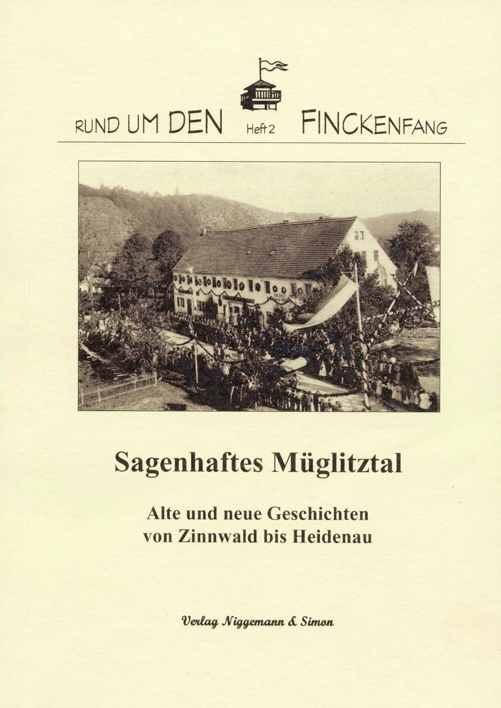

Rund um den Finckenfang · Heft 2
Sagenhaftes Müglitztal. Alte und neue Geschichten von Zinnwald bis Heidenau
Gesammelt und aufgeschrieben von Kindern, Lehrern und Mitgliedern des Schulfördervereins Grundschule Mühlbach e. V.
1. Auflage · Maxen 2003 · 140 Seiten · über 50 Abbildungen
ISBN 3-9808477-1-3
10,00 €
Zurzeit nicht lieferbar